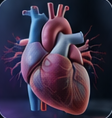

Now animated: every screen loops its own sequence: the check-in arrives, the generated image resolves from a blur, answers and confidence get picked, feedback reveals, and the "Lost me" confirmation runs. You can turn motion off or change the loop length in Tweaks. Translated the docx concepts (dark purple) into Edvana's light emerald system. Decisions from your form: desktop browser · generated image as a full-width banner above the question (illustration by default, diagram when needed) · confidence in the same card as the answer · "Lost me" in the bottom bar next to "I'm following" with a quiet anonymous confirmation · auto timing shown only as a subtle "listening" status. Course images are cropped from your docx as stand-ins for generated art.
01 · Listening (between auto check-ins)
1aBreathing spiral — the mark at the center, rings breathe slowly
edvana.dev/live/482913

Cardiovascular Physiology
BIO 301 · Prof. Mitchell
142 in the roomClass is live
{{ rings }}
Edvana Live
Listening with your class
Following the lecture and looking for a moment worth checking. You'll see it here.
Following the lectureFinding key concepts{{ pulse }}Preparing a check-in
Always anonymous
1bTopic thread — editorial, shows what's being discussed with a live listening wave
edvana.dev/live/482913
Cardiovascular Physiology
BIO 301 · Prof. Mitchell
142 in the roomClass is live
{{ glow }}
{{ pulse }}Now discussing
The Frank-Starling mechanism
Edvana is listening alongside you. When there's something worth checking, a short question will appear — no need to do anything until then.
It's natural to think the heart pumps a fixed amount. But more venous return stretches the ventricle, and on the Frank-Starling curve a stretched muscle contracts harder — so stroke volume rises.
You weren't alone.43% of the class made the same distinction.
Prof. Mitchell sees this too
Always anonymous
1gThinking mirror — confidence × correctness grid shows where you landed; warmer copy
edvana.dev/live/482913
Cardiovascular Physiology
BIO 301 · Prof. Mitchell
142 in the roomClass is live
Check-in 3 · your thinking
Your certainty just taught you something.
You were sure stroke volume stays the same. It actually increases: more filling stretches the ventricle, and a stretched muscle contracts harder. That's the Frank-Starling link worth holding onto.
43% of the room landed in the same square.
CorrectNot yetSure
Solid
You knew it, and knew you knew it.
You · B, Certain
Misconception found
The most valuable square to land in.
Unsure
Knew more than you thought
Still forming
Waiting for Prof. Mitchell to walk through it…
Always anonymous
04 · "Lost me" — bottom bar, idle → after tap (quiet, anonymous)
1hPaired pills — the tapped pill itself becomes the confirmation, then resets
Idle
After tap · ~4s, then resets
Prof. Mitchell sees the room, never your name.
1iSegmented switch — one control, two states; a small note rises above it
Idle
Lost meI'm following
After tap
Noted, anonymously. You can switch back anytime.
Lost meI'm following
1jWhisper — small text buttons at the edge; a hairline fills while the signal stays active
Idle
{{ pulse }}Listening with your classFollowingLost me
After tap · active for 60s
Your signal is in — anonymousUndo
05 · After-class recap
1kWhat changed today — understanding over time, survey tucked at the bottom
edvana.dev/live/482913/recap
Cardiovascular Physiology
BIO 301 · Prof. Mitchell
Class ended · 10:50
What changed today
Today in Cardiac Physiology
Strong
Frank-Starling mechanism · Venous return
Misconception corrected
Preload vs. afterload
2×
You changed your mind correctly
Second-chance questions, both right
Worth another look
Ventricular compliance
Would you want Edvana used again next class?
Definitely yesProbably yesProbably noDefinitely no
Try next: "combine 1d's full-bleed image with 1c's 2×2 answers" · "use 1i for Lost me everywhere" · "make it a clickable prototype from 1a through 1k"